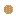

説明
①子ども セリウムやランタンのレアアースをふくむ石。
②学生 バストネス石の鉱石を掘る。かまどで焼く → 焼いたバストネス石。
③大人 (Ce,La)CO3F。名前はスウェーデンのバストネス鉱山から。セリウムも 1803年にこの鉱山の石から見つかった。
④ガチ レアアースは「まれ」と名前にあるが、セリウムは地殻の中で銅と同じくらい多い。まとまった鉱床が少なく、分けるのがむずかしい。
作り方
（作り方のレシピは無い：拾う・掘る・ほかの方法）

①子ども セリウムやランタンのレアアースをふくむ石。
②学生 バストネス石の鉱石を掘る。かまどで焼く → 焼いたバストネス石。
③大人 (Ce,La)CO3F。名前はスウェーデンのバストネス鉱山から。セリウムも 1803年にこの鉱山の石から見つかった。
④ガチ レアアースは「まれ」と名前にあるが、セリウムは地殻の中で銅と同じくらい多い。まとまった鉱床が少なく、分けるのがむずかしい。
（作り方のレシピは無い：拾う・掘る・ほかの方法）